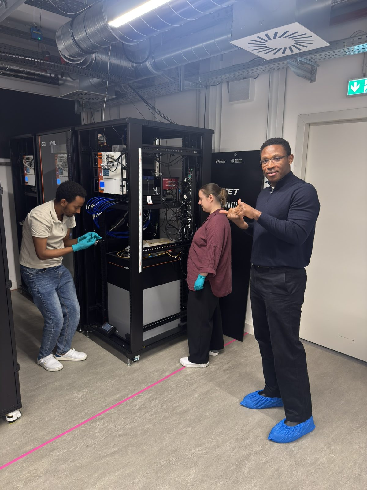
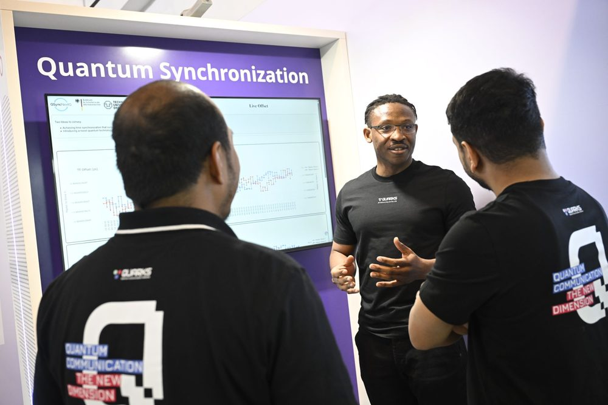
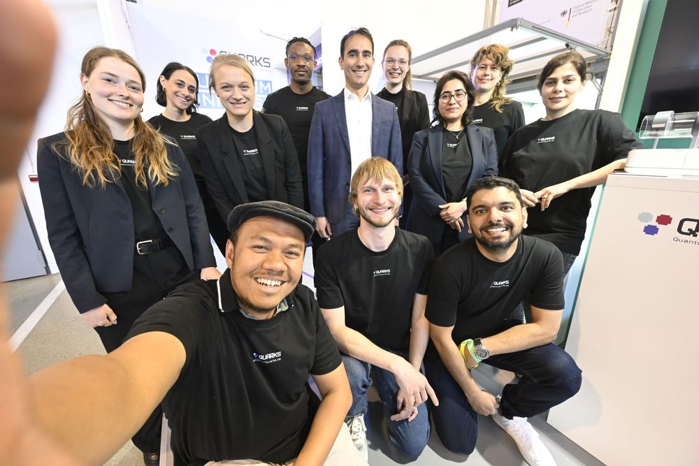
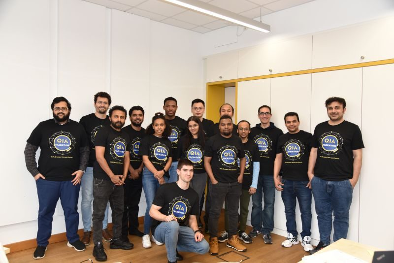
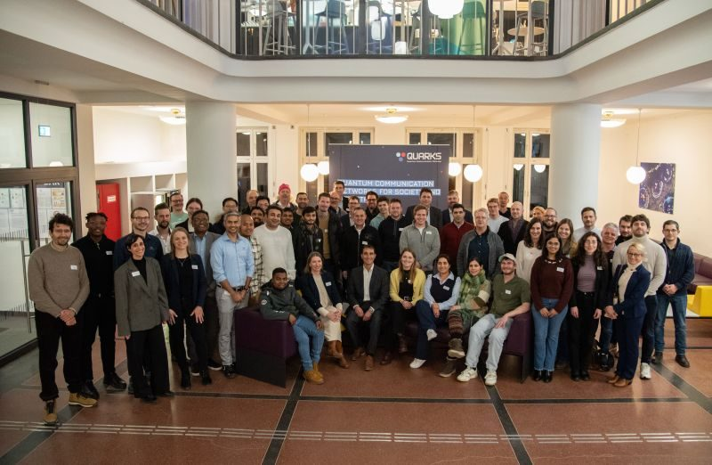
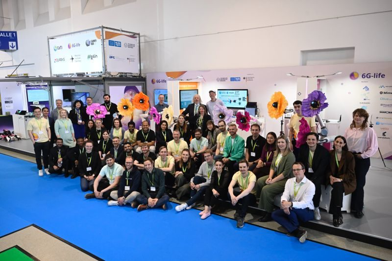

Dr.-Ing., Quantum Communication
Technische Universität Dresden
I am Buniechukwu Njoku — Bunie — a network engineer and researcher. My work concerns a single question: what does it take to make quantum communication operational?
My route to that question ran through production networks. At Nokia I spent three years deploying and migrating carrier IP/MPLS infrastructure — several hundred devices commissioned, backbone capacity raised from 10/40 to 100/400 Gbit/s, dozens of live traffic migrations executed with near-zero service impact. Carrier work enforces an exacting definition of finished: a system is complete when someone who did not build it can operate it, and when its behaviour under failure is as well understood as its behaviour under load.
That standard travelled with me through a master's in advanced electronic systems at the Université de Bourgogne and into the Deutsche Telekom Chair of Communication Networks at TU Dresden, where I now build the protocols, timing and orchestration that allow a quantum testbed to be operated — measured, scheduled, reproduced — like the network it is intended to become.
ComNets, the quantum lab, and the people in it.






Technische Universität Dresden
Université de Bourgogne — graduated with honours (bien)
Federal University of Technology, Owerri
Capabilities in the context of the work they serve.
The networking foundation — BGP, OSPF and IS-IS routing, MPLS with traffic engineering, QoS design, VXLAN/EVPN — was built in carrier practice, applied daily across Cisco, Juniper and Nokia platforms in multi-vendor integration. The same period shaped my operational instincts: gNMI/gRPC and SNMP telemetry for observability, and packet-level fault isolation as the difference between a migration that completes quietly and one that becomes an incident.
In Dresden that stack serves research. Python and Go implement the photon-event processing and orchestration services of the QD-CamNetz testbed, while Ansible and Jenkins carry the automation habits of carrier integration into reproducible experiment pipelines. Docker and Kubernetes package the control plane; ns-3, Open5GS and UERANSIM provide the simulated 5G environments against which designs are validated before they reach hardware. Precision Time Protocol underpins the synchronization work throughout.
Vendor certification — Juniper Automation and DevOps, Nokia Routing Specialist, Cisco CCNA CyberOps and Google Cloud Associate Cloud Engineer — formalizes the platform breadth that this practice draws on.